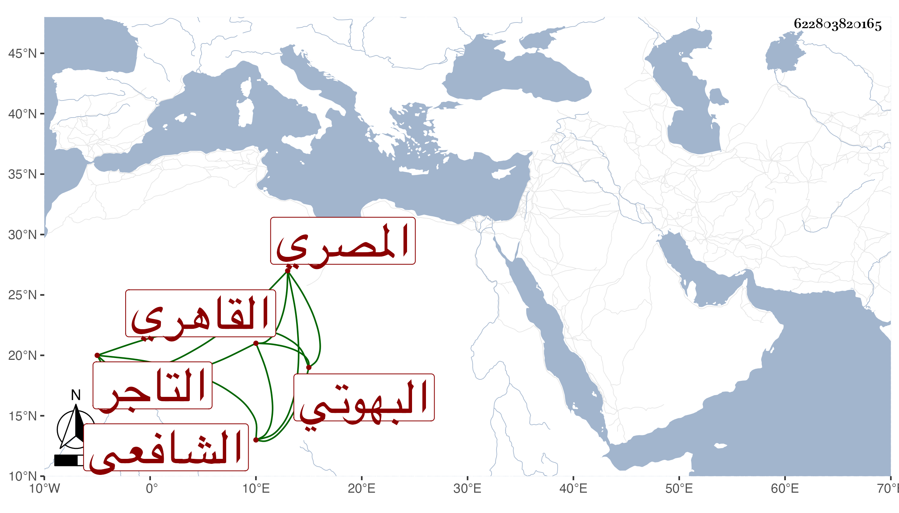

0902Sakhawi.DawLamic.ITO20230111-ara1.EIS1600.622803820165
Biography ID: 622803820165
أحمد بن عبد الواحد بن أحمد الشهاب البهوتي ثم القاهري الشافعي المصري التاجر صهر الفخر عثمان الديمي أخو زوجته ثم والد التي تليها . سمع بقراءته ومعنا على الرشيدي والصالحي بل وشيخنا ، ومما سمعه ختم البخاري بالظاهرية ، وأخذ القراءات عن الزين عبد الغني الهيتمي واشتغل يسيرا وحضر الدروس وفهم في الجملة ولكن همته متوجهة للتجارة والتحصيل مع يبس وإمساك وهو والد جلال الدين خال صلاح الدين محمد بن الديمي .
